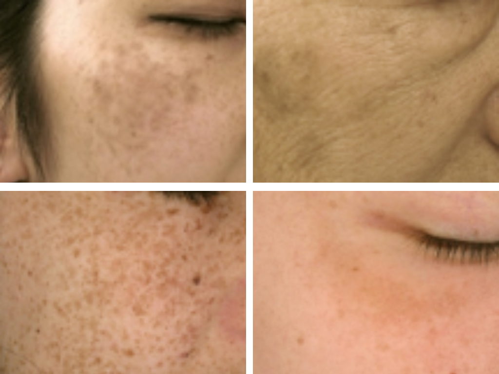

シミはメラニンによる色素性病変ですが、そのメラニンの分布や原因により診断が異なります。老人性色素斑、雀卵斑、肝斑、ADM(後天性真皮メラノサイトーシス)の４つに分類され、それぞれ原因や治療法が異なります。複数のシミが混在していることも多く、適切な診断とそれぞれにあった治療選択が大切です
シミの特徴と原因

●老人性色素斑(日光黒子)
シミの中で最も頻度が多く、皆さんが一般的に"シミ"と認識しているものです。境界明瞭で大きさがバラバラでお顔のどの部分でも見られます。紫外線が原因でできるシミになります。
●雀卵斑
いわゆる"そばかす”と呼ばれるシミです。左右対称で、顔面中央部に多発し、1つ１つの大きさが比較的揃っていることが特徴です。遺伝性があり、小・中学生から見られることが多いです。紫外線でシミができやすい遺伝的な素因があると言われています。
●後天性真皮メラノサイトーシス(ADM)
左右対称で、両頬に多く、境界不明瞭で、色調が淡い茶色や灰色のシミです。真皮にいる未熟なシミを作る細胞が、紫外線刺激により活性化されシミを作ることが原因です。
●肝斑、色素沈着
30-50代の出産適齢期や更年期の女性に多く、主に頬や額、こめかみに左右対称に発症するシミです。境界不明瞭で地図状にぼやけていることが特徴です。
当院では肌画像診断機（visia）を用いてシミの種類や肌の状態を確認し、シミを改善するだけでなく、肌をきれいにしていくことを目的とした治療を行っています。シミの種類によって治療法が異なるので、診察させていただき説明致します。
【治療】
【Drコメント】
シミには４種類ありますが、レーザーで取れやすいシミからスキンケアから見直し時間を要するシミまで様々です。また何回治療を行っても取りきれないシミもあります。ただシミは肌の老化現象の一つにすぎません。当院ではシミ治療を行う際にも、シミだけを治療するのではなく肌全体をきれいにすることを目的に治療を行っています。長期的にきれいな肌を実現するために、レーザーを組み合わせたカスタマイズ治療を行っています。